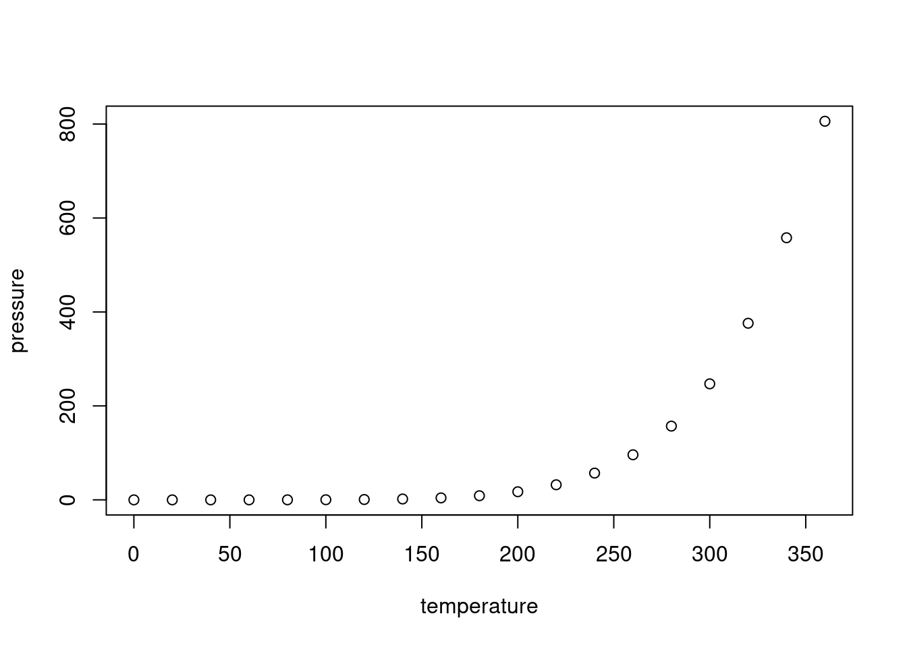

Last updated: 2020-08-21
Checks: 6 1
Knit directory: ChromatinSplicingQTLs/analysis/
This reproducible R Markdown analysis was created with workflowr (version 1.6.2). The Checks tab describes the reproducibility checks that were applied when the results were created. The Past versions tab lists the development history.
The R Markdown file has unstaged changes. To know which version of the R Markdown file created these results, you’ll want to first commit it to the Git repo. If you’re still working on the analysis, you can ignore this warning. When you’re finished, you can run wflow_publish to commit the R Markdown file and build the HTML.
Great job! The global environment was empty. Objects defined in the global environment can affect the analysis in your R Markdown file in unknown ways. For reproduciblity it’s best to always run the code in an empty environment.
The command set.seed(20191126) was run prior to running the code in the R Markdown file. Setting a seed ensures that any results that rely on randomness, e.g. subsampling or permutations, are reproducible.
Great job! Recording the operating system, R version, and package versions is critical for reproducibility.
Nice! There were no cached chunks for this analysis, so you can be confident that you successfully produced the results during this run.
Great job! Using relative paths to the files within your workflowr project makes it easier to run your code on other machines.
Great! You are using Git for version control. Tracking code development and connecting the code version to the results is critical for reproducibility.
The results in this page were generated with repository version dd0eadb. See the Past versions tab to see a history of the changes made to the R Markdown and HTML files.
Note that you need to be careful to ensure that all relevant files for the analysis have been committed to Git prior to generating the results (you can use wflow_publish or wflow_git_commit). workflowr only checks the R Markdown file, but you know if there are other scripts or data files that it depends on. Below is the status of the Git repository when the results were generated:
Ignored files:
Ignored: .Rhistory
Ignored: .Rproj.user/
Ignored: code/.snakemake/
Ignored: code/Alignments/
Ignored: code/Bigwigs/
Ignored: code/Fastq/
Ignored: code/Genotypes/
Ignored: code/Log.out
Ignored: code/Phenotypes/
Ignored: code/PlotGruberQTLs/
Ignored: code/ReferenceGenome/
Ignored: code/Rplots.pdf
Ignored: code/Session.vim
Ignored: code/logs/
Ignored: code/scratch/
Ignored: code/scripts/GenometracksByGenotype/GenometracksByGenotype.conda_env.yml
Ignored: code/scripts/GenometracksByGenotype/NormalizedBigwigsByGenotype.py
Ignored: code/scripts/GenometracksByGenotype/images/
Ignored: code/scripts/GenometracksByGenotype/test_data/
Ignored: code/scripts/GenometracksByGenotype/tracks_templates/
Ignored: code/scripts/liftOverBedpe/liftOverBedpe.py
Ignored: code/snakemake.sbatch.log
Unstaged changes:
Modified: analysis/DataInCode_20200821_H3K4me3AndEqtl.Rmd
Modified: analysis/about.Rmd
Note that any generated files, e.g. HTML, png, CSS, etc., are not included in this status report because it is ok for generated content to have uncommitted changes.
These are the previous versions of the repository in which changes were made to the R Markdown (analysis/about.Rmd) and HTML (docs/about.html) files. If you’ve configured a remote Git repository (see ?wflow_git_remote), click on the hyperlinks in the table below to view the files as they were in that past version.
| File | Version | Author | Date | Message |
|---|---|---|---|---|
| Rmd | dd0eadb | Benjmain Fair | 2020-08-21 | initial commit |
| html | dd0eadb | Benjmain Fair | 2020-08-21 | initial commit |
A project investigating the correlation of genetic effects on chromatin, splicing, transcription, and complex phenotypes, using naturally occuring human genetic variation.
This is an R Markdown document. Markdown is a simple formatting syntax for authoring HTML, PDF, and MS Word documents. For more details on using R Markdown see http://rmarkdown.rstudio.com.
When you click the Knit button a document will be generated that includes both content as well as the output of any embedded R code chunks within the document. You can embed an R code chunk like this:
summary(cars) speed dist
Min. : 4.0 Min. : 2.00
1st Qu.:12.0 1st Qu.: 26.00
Median :15.0 Median : 36.00
Mean :15.4 Mean : 42.98
3rd Qu.:19.0 3rd Qu.: 56.00
Max. :25.0 Max. :120.00 You can also embed plots, for example:

| Version | Author | Date |
|---|---|---|
| dd0eadb | Benjmain Fair | 2020-08-21 |
Note that the echo = FALSE parameter was added to the code chunk to prevent printing of the R code that generated the plot.
Make sure you installed the workflowr library for R. I have been organizing this project according to this cookiecutter project template https://github.com/bfairkun/cookiecutter-wflowR-smk. To summarize, this project structure follows the recommended project structure by the workflowr project (https://jdblischak.github.io/workflowr/articles/wflow-01-getting-started.html), where all of the files in code are part of a snakemake workflow. The snakemake workflow takes care of all of all the data proessing that requires lots of computational resources, and outputs some relevant files into the output directory if they are small enough to add to github. Large files that the snakemake creates are saved in code and not added to git repository as specified in code/.gitignore (since github places a limit on the size of files that can be upload), but theoretically, they can be easily recreated using the snakemake. From there, I use these R to further analyze and explore the results, in the form of Rmarkdown scripts for each conceptually distinct analysis I am interested in. Each Rmarkdown script should contain enough information for others to follow my thoughts as I analyze data. All of the datafiles required to run the Rmarkdown scripts should be in output, data, or code, and all the Rmarkdown scripts should reference these filepaths using relative filepaths for easier reproducibility. When I am satisfied with the Rmarkdwon analysis and I want to make my analyses public, I use the workflowr::wflow_build() command in the console. This will knit the Rmd file(s) in analysis into html files in docs, which github can host for display as a public website. All Rmd files that are to be included into this workflow must be saved in analysis. I have a naming convention for Rmd files:
data/ or output/ should be named as such: analysis/DataNotInCode_<date>_<short title>.Rmd.code/ should be named as such: analysis/DataInCode_<date>_<short title>.Rmd.With this, Rmd files that can be easily ran by cloning the git repo to my local computer are separated from the Rmd files that require large data files which I keep on midway as part of the snakemake. Therefore, from my laptop, I can run build Rmd files locally with workflowr::wflow_build("analysis/DataNotInCode_*"). I can build the other Rmd files on midway. After Rmd files are built into docs/, I can add and commit them to the repository.
Here is an example Rmd.
Let’s use this branching workflow to collaborate with git. Others can clone my repo, start their own branch, make commits, and send pull requests to merge into master (the public site that github hosts will be on the master branch). Only I will have permissions to write to the master branch, so collaboraters must send pull requests. Alternatively, we can work with this forking workflow if you prefer, so that you have permissions to write to the master branch on your own repository.
sessionInfo()R version 3.6.1 (2019-07-05)
Platform: x86_64-pc-linux-gnu (64-bit)
Running under: Scientific Linux 7.4 (Nitrogen)
Matrix products: default
BLAS/LAPACK: /software/openblas-0.2.19-el7-x86_64/lib/libopenblas_haswellp-r0.2.19.so
locale:
[1] LC_CTYPE=en_US.UTF-8 LC_NUMERIC=C
[3] LC_TIME=en_US.UTF-8 LC_COLLATE=en_US.UTF-8
[5] LC_MONETARY=en_US.UTF-8 LC_MESSAGES=en_US.UTF-8
[7] LC_PAPER=en_US.UTF-8 LC_NAME=C
[9] LC_ADDRESS=C LC_TELEPHONE=C
[11] LC_MEASUREMENT=en_US.UTF-8 LC_IDENTIFICATION=C
attached base packages:
[1] stats graphics grDevices utils datasets methods base
loaded via a namespace (and not attached):
[1] workflowr_1.6.2 Rcpp_1.0.3 rprojroot_1.3-2 digest_0.6.20
[5] later_0.8.0 R6_2.4.0 backports_1.1.4 git2r_0.26.1
[9] magrittr_1.5 evaluate_0.14 stringi_1.4.3 fs_1.3.1
[13] promises_1.0.1 whisker_0.3-2 rmarkdown_1.13 tools_3.6.1
[17] stringr_1.4.0 glue_1.3.1 httpuv_1.5.1 xfun_0.8
[21] yaml_2.2.0 compiler_3.6.1 htmltools_0.3.6 knitr_1.23